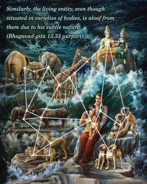

The sky, due to its subtle nature, does not mix with anything, although it is all-pervading. Similarly, the soul situated in Brahman vision does not mix with the body, though situated in that body.

The air enters into water, mud, stool and whatever else is there; still it does not mix with anything. Similarly, the living entity, even though situated in varieties of bodies, is aloof from them due to his subtle nature. Therefore it is impossible to see with the material eyes how the living entity is in contact with this body and how he is out of it after the destruction of the body. No one in science can ascertain this.